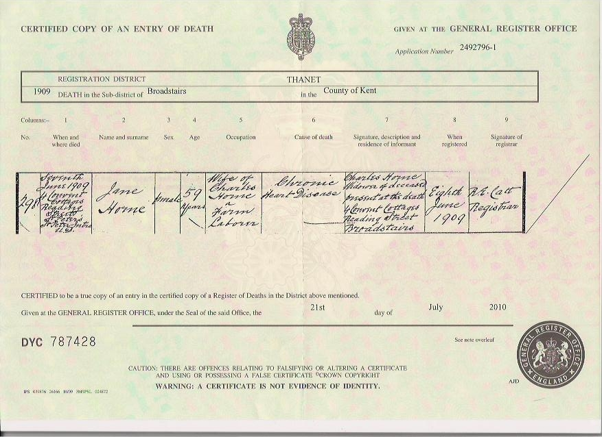
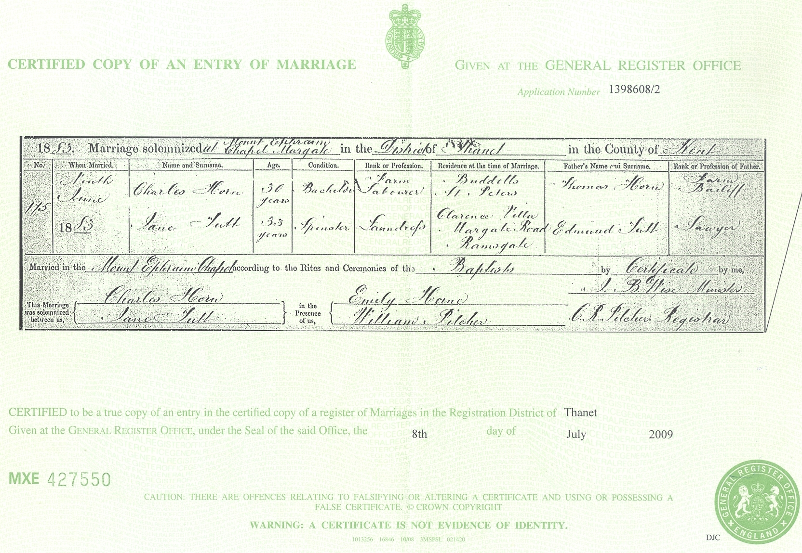
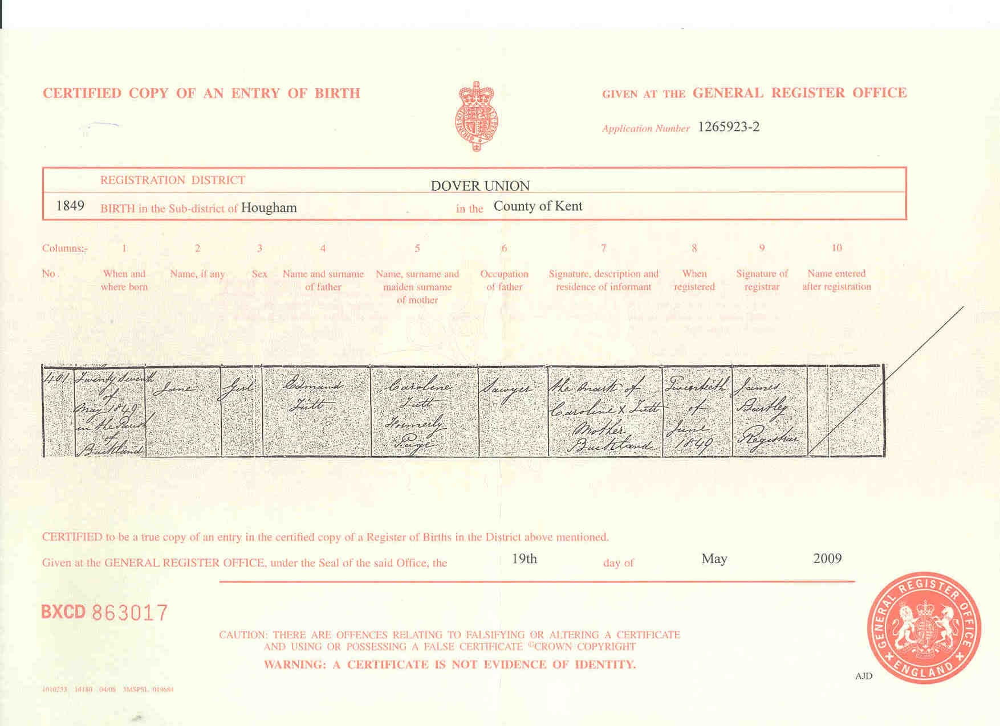
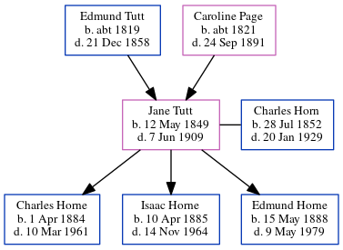

Jane Horn (née Tutt) 1849 - 1909
[ Home ] | [ Calendar ] | [ Surnames Index ] | [ Census Index ] | [ Family History ]A laundress and the child of Edmund Tutt (a sawyer) and Caroline Page (a laundress), Jane Tutt, the great-grandmother of Nigel Horne, was born in Buckland, Kent, England on May 12, 18491,2,3,4,5,6,7,8 and married Charles Horn (a waggoner on a farm with whom she had 3 children: Charles Henry, Isaac and Edmund) at Mount Ephraim Baptist Chapel, Margate, Kent, England on Jun 9, 18839 (Mount Ephraim Chapel).
During her life, she was living at 40 George Street in Buckland on Mar 30, 185114; at 13 Shooter's Hill in Buckland on Apr 7, 186112; at 7 Market Place, Dover, Kent on Apr 2, 18713; at 18 Clarence Terrace, St Lawrence, Thanet, Kent on Apr 3, 188113 (when she was living with her); at Drapers Cottage in Margate on Apr 5, 18915; and at 15 Haine Cottages, St Lawrence, Thanet, Kent on Mar 31, 19016.
She died on Jun 7, 1909 at 4 Convent Cottages, Reading Street, St Peters, Thanet, Kent8 (chronic heart disease) and was buried there on Jun 11, 1909.
Parents
- Edmund was born c. 1819
- Caroline Bromley was born c. 1821
Children
- Charles Henry was born on Apr 1, 1884
- Isaac was born on Apr 10, 1885
- Edmund was born on May 15, 1888
Citations
- 1851 England Census Online publication - Provo, UT, USA: The Generations Network, Inc., 2005.Original data - Census Returns of England and Wales, 1851. Kew, Surrey, England: The National Archives of the UK (TNA): Public Record Office (PRO), 1851. Data imaged from the National
- 1861 England Census Online publication - Provo, UT, USA: The Generations Network, Inc., 2005.Original data - Census Returns of England and Wales, 1861. Kew, Surrey, England: The National Archives of the UK (TNA): Public Record Office (PRO), 1861. Data imaged from the National
- 1871 England Census Online publication - Provo, UT, USA: The Generations Network, Inc., 2004.Original data - Census Returns of England and Wales, 1871. Kew, Surrey, England: The National Archives of the UK (TNA): Public Record Office (PRO), 1871. Data imaged from the National (Servant, aged 21)
- 1881 England Census Online publication - Provo, UT, USA: The Generations Network, Inc., 2004. 1881 British Isles Census Index provided by The Church of Jesus Christ of Latter-day Saints © Copyright 1999 Intellectual Reserve, Inc. All rights reserved. All use is subject to the
- 1891 England Census Online publication - Provo, UT, USA: The Generations Network, Inc., 2005.Original data - Census Returns of England and Wales, 1891. Kew, Surrey, England: The National Archives of the UK (TNA): Public Record Office (PRO), 1891. Data imaged from The National
- 1901 England Census Online publication - Provo, UT, USA: The Generations Network, Inc., 2005.Original data - Census Returns of England and Wales, 1901. Kew, Surrey, England: The National Archives of the UK (TNA): Public Record Office (PRO), 1901. Data imaged from the National
- England & Wales, FreeBMD Birth Index, 1837-1915 Online publication - Provo, UT, USA: The Generations Network, Inc., 2006.Original data - General Register Office. England and Wales Civil Registration Indexes. London, England: General Register Office. © Crown copyright. Published by permission of the Cont
- England & Wales, FreeBMD Death Index: 1837-1915 Online publication - Provo, UT, USA: The Generations Network, Inc., 2006.Original data - General Register Office. England and Wales Civil Registration Indexes. London, England: General Register Office. © Crown copyright. Published by permission of the Cont
- England & Wales, FreeBMD Marriage Index: 1837-1915 Online publication - Provo, UT, USA: The Generations Network, Inc., 2006.Original data - General Register Office. England and Wales Civil Registration Indexes. London, England: General Register Office. © Crown copyright. Published by permission of the Cont
- 1891 England, Wales & Scotland Census - Findmypast (was age 40 and the wife of the head of the household)
- 1901 England, Wales & Scotland Census - Findmypast (was age 51 and the wife of the head of the household)
- 1861 England, Wales & Scotland Census - Findmypast (was age 11 and the daughter of the head of the household)
- 1881 England, Wales & Scotland Census - Findmypast (was age 31 and the daughter of the head of the household)
- 1851 England, Wales & Scotland Census - Findmypast (was age 1 and the daughter of the head of the household)
Media
Jane Tutt - Death Certificate

Charles Horne and Jane Tutt - Marriage Certificate

Jane Tutt - Birth Certificate

Thanet Advertiser - 16 Jun 1883

1901 England, Wales & Scotland Census Transcription - GBC-1901-0007467101
England & Wales deaths 1837-2007 - BMD/D/1909/2/AZ/000165/081
England & Wales births 1837-2006 - BMD/B/1849/2/TZ/000171/037
1881 England, Wales & Scotland Census - GBC/1881/0004863748
Family Tree
Generated by ged2site. Last updated on Jun 11, 2024